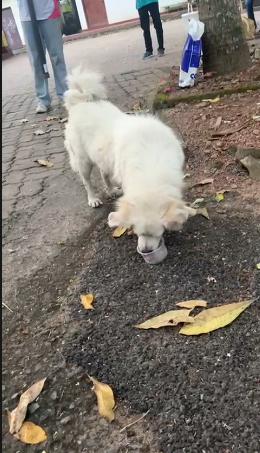

The Pawsitive Impact initiative, organized by the Rotaract Club of ICBT on 9th November 2025 in Dehiwala, was designed to address the pressing welfare needs of street animals while reminding our society of its collective responsibility to nurture a kinder, safer environment for every living being.
Urban Challenges & Humane Coexistence
In bustling urban landscapes, stray dogs and cats endure daily ordeals of chronic hunger, dehydration, weather exposure, and preventable ailments. These realities connect intimately with broader concerns of neighborhood hygiene and public health. Recognizing this, our volunteers rallied to provide both direct nutritional relief and community awareness.
“Compassion-led service transforms communities. When we extend care to the most defenseless creatures, we build a society that is healthier, kinder, and more responsible.”
How the Mission Unfolded
A dedicated squad of seven collegiate Rotaractors commenced the operation from Dehiwala Railway Station, systematically covering feeding routes across coastal and suburban paths from 1:00 PM to 5:00 PM. Before embarking, volunteers were thoroughly briefed on safe animal engagement, hygienic feeding protocols, and route management.
Wholesome pet food and clean water were provided to over 45 street animals. Crucially, the team ensured all distribution points were left immaculate, demonstrating environmental stewardship and civic courtesy.
Community Sensitization & Sustainable Values
Direct action was paired with community dialogue: conversations with shopkeepers and local residents highlighted that caring for urban animals is a shared civic responsibility. Humane treatment reduces stray aggression, supports environmental cleanliness, and models empathy for collegiate youth.
The project aligned directly with Rotary focal areas of Disease Prevention & Treatment and Environmental Protection, championing the United Nations Sustainable Development Goals for good health and life on land.
Action Chronicle Gallery

Creating a Kinder Community
Pawsitive Impact stands as a shining testament that youth-driven empathy creates tangible ripples. True service goes beyond temporary aid—it plants values, builds community awareness, and inspires responsible coexistence.